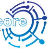
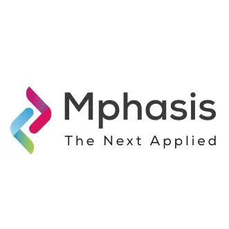

Hi,
My name is Manan
and I am a passionate

Work Experience
IT Intern
(April 2021- August 2021)
Victora Auto Pvt Ltd
• Created and implemented company specific and SAP codes to perform ERP functions that generate billings, inventories, and 50+ sales orders
• Established contact with 250+ potential customers for RFQs and maintained thorough communication with the development team for prototype and resource planning
• Assisted marketing and technical VPs in regular updates about the company’s operations and site/client visits for potential problems, and orders

Systems Engineering Intern
(June 2022- August 2022)
Elite Quad Core Solutions LLC
• Configured 5+ firewalls on Cisco products using Palo Alto Networks and implemented company-specific SSL decryption policies to ensure secure network access for clients.
• Provided technical support to the company's biggest client by designing and coding a customized SSL decryption policy for a two-ethernet port firewall setup on the Palo Alto Networks portal using set and Linux on a Cisco Meraki 801.
• Streamlined data processing and analysis by combining data from multiple systems and generating analytical, production, and quality reports in the appropriate format, showcasing strong data management and reporting skills.

Software Engineering Intern
(June 2023- July 2023)
Mphasis Limited
• As a Software Engineering Intern at Mphasis Limited, successfully deployed complex applications utilizing technologies such as Kubernetes, Docker, AWS EC2 instances, and CI/CD servers, ensuring seamless deployment and efficient container orchestration.
• Demonstrated expertise in managing network services with host IP allocation through Proxy on AWS EC2 and Route53, resulting in significant downtime reduction and improved production environment stability
• Collaborated with teams to implement CI/CD pipelines, enabling continuous integration and deployment, while also contributing to the development and deployment of a Reddit clone, showcasing strong skills in container management and network optimization.